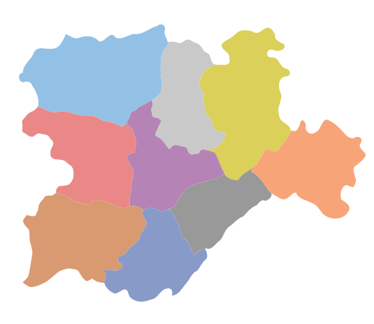
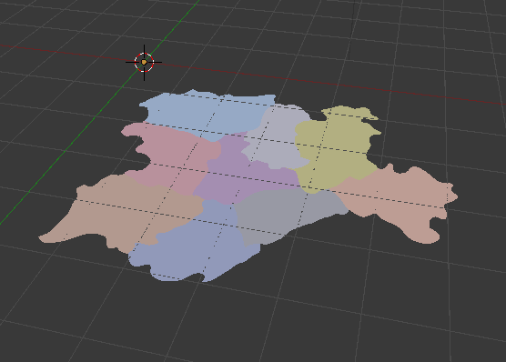
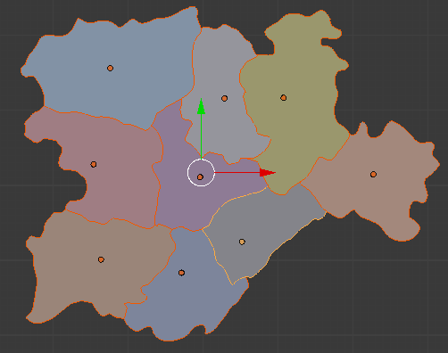
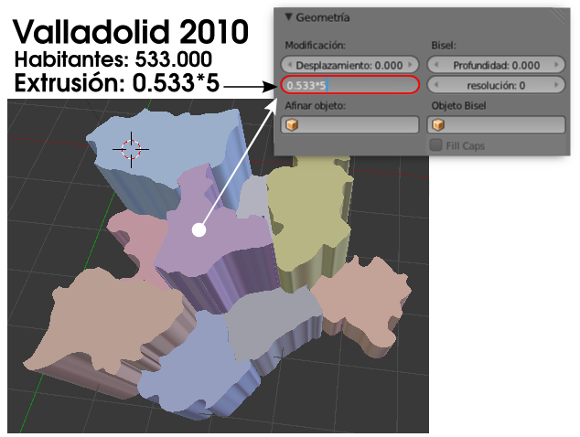
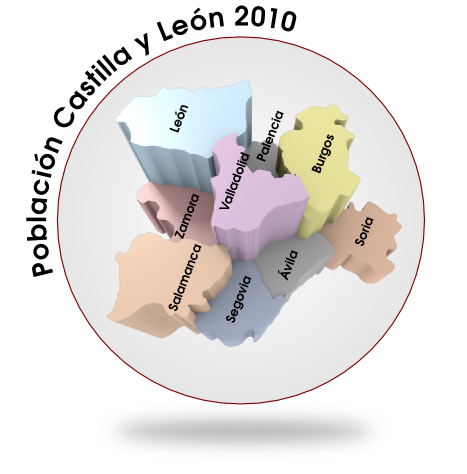

Material didáctico: Gráficas estadísticas
Supongamos que hemos creado en Inkscape o que hemos encontrado en algún repositorio de cliparts un gráfico en formato SVG con las provincias de Castilla y León. En última instancia también podemos dar por hecho que hemos creado nosotros mismos las curvas usando las curvas de bézier del propio Blender.
Este es el gráfico.
En la escena de inicio de Blender eliminamos ("Supr") el cubo e importamos el archivo SVG con Archivo/Importar/Scalable Vector Graphics (.svg).
Vemos cómo Blender importa los colores correctamente. Aunque no lo parezca a simple vista, en realidad son nueve objetos los que se han importado porque las curvas son independientes. Parecen un solo objeto porque todos los Orígenes coinciden. Lo mejor es seleccionar los nueve objetos a la vez y colocar cada uno de los orígenes en su sitio con la opción Origen/Origen a la geometría del cuadro Herramientas ("T").
Ahora en cada curva aplicamos en su correspondiente panel una extrusión en función de los datos que queremos transmitir con la gráfica. Vamos a adaptar los valores de los que disponemos relativos a la población por provincias dentro del campo de la extrusión. Como los valores reales darían unas extrusiones tremendas hacemos tal y como se indica en esta imagen puesto que ya sabemos que dentro de los campos se pueden hacer operaciones matemáticas.
Estos son los datos a utilizar:
- Ávila: 171.896
- Burgos: 374.826
- León: 499.284
- Palencia: 172.510
- Salamanca: 353.619
- Segovia: 164.268
- Soria: 95.258
- Valladolid: 533.640
- Zamora: 194.214
De este modo conseguiremos ilustraciones para presentar gráficos en esta línea.
